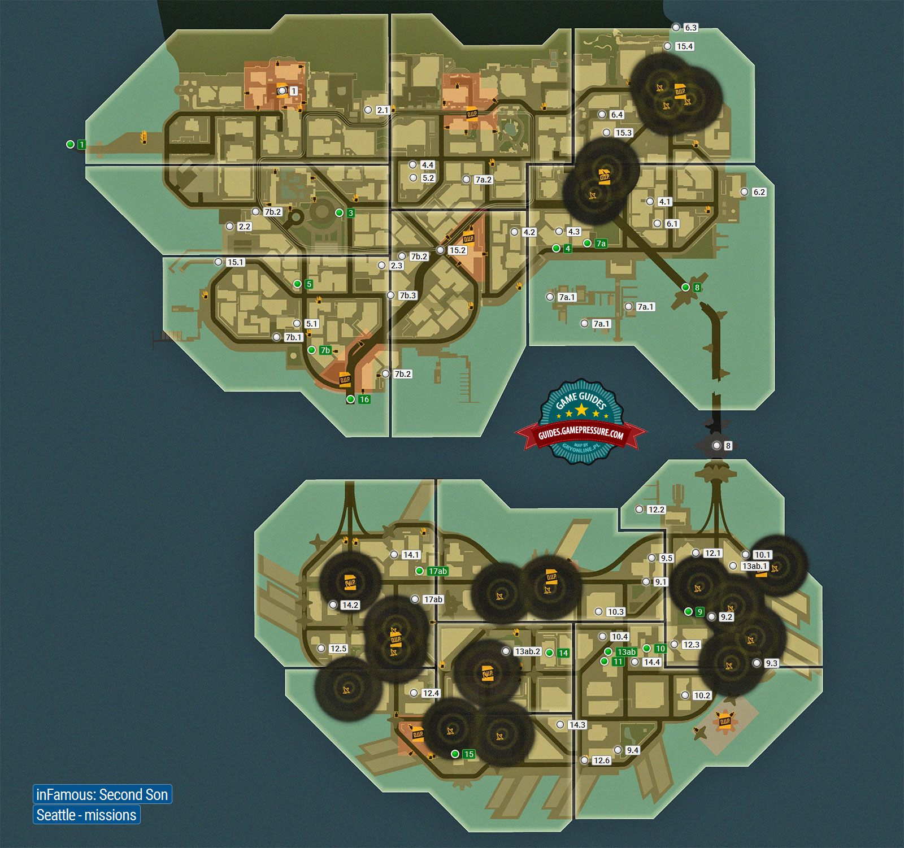

Mapa

Teniendo lugar 7 años después de los eventos de InFamous e InFAMOUS 2; el DUP ha cercado esta ciudad para evitar que los acontecimientos en Empire City y New Marais no vuelvan a ocurrir de nuevo.
El protagonista del juego, Delsin Rowe, creció a sus afueras, en la reserva de Akomish a través del puente 520 en Washington y fue allí donde consiguió sus poderes al salvar a un "Bioterrorista" llamado Hank Dughtry de un autobús ardiendo; Delsin tuvo que entrar a la ciudad para obtener el poder de Hormigón para salvar a su tribu.
La mayor parte del juego tiene lugar en Seattle y es donde Delsin adquiere poderes de Neon, Video y Hormigón dentro de los limites de la ciudad.
Distritos
Isla Norte
- Reina Anna
- Centro de Seattle
- Distrito del Mercado
- Paramount
- Georgetown
- Belltown
- Pioneer Square
Isla Sur
- Zona Residencial
- Centro de la Ciudad
- Frente al Mar
- Parque Denny
- Distrito Linterna
- Zona lluviosa